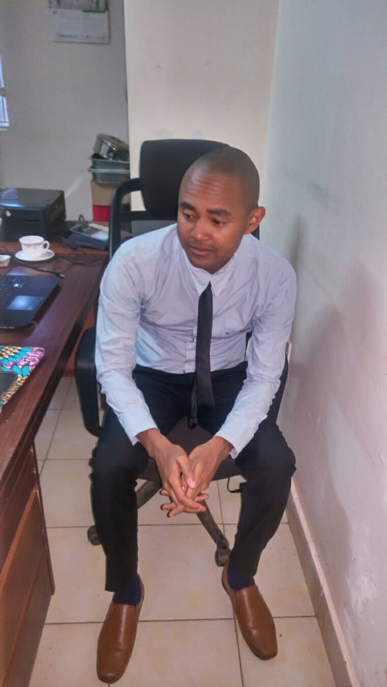

First Independent Project
Erastus Kariuki

This was my first week of learning software development its been a rough road but through help of my felllow peers, and the support from my Technical Mentor i was able to handle all the blockers that come on my way.
Here are some of the projects that i have done with a brief description and a live link named"clickme" for your perusal, unfortunately am still working on them, to meet up with the standards required.
- MY FIRST WEBSITE:This is just a skeleton of a website that i did on my first day in with no styling or any modifications.It has all the essential elements that i covered.
clickme
- MY FAVOURITE THING:It is a simple but clear website best suitable for animal lovers.It helps them get more information about, animal of their choice, help-centers for reporting any issues and generally information that they din't know about their pets.
clickme
- MEALBOX HOTELS & RESORTS:This is a 5star-hotel located in madagascar with breath taking sceneries of the beach near it.
clickme
About Me
Here is a small decription about my education background, work experience, my interests and hobbies
Education Background
-
2003-2007: Ruai Primary school persued my KCPE.
-
2008-2011: Kiburu Boys High School persued my KCSE.
-
2014-2016: Nairobi Institute Of Business Studies pursued a Diploma in hospitality management and graduated in 2017.
Work Experience
-
2015-2016: Funcity Gardens as a food and beverage waiting staff during weekends on casual basis.
-
2017-2018: Safari-park Hotel for my industrial internship of three months, then was employed but on casual basis.
-
2018-july2019: Oddyssy grill as food and beverange assistant manager.
-
july2019-july2020: K1 Klubhouse (thekahamagroupofhotels) as an assistant head supervisor.
Why this Course
I have interacted with a few web developers some of which are friends and others just workmates.After a period of time i started gaining interest and was amaized about software development so i wanted to know in details, though i dint have time to enroll i stayed silent after the pandemic happened i saw it a my chance to get backs to school and work on it.There is a growing need for talented software developers across every industry.This means that the technology advances while considering design, development, security and maintenance that every company from finance to healthcare to hospitality etc.
Interests And Hobbies
Hobbies:
- Cooking
- Travelling
- Community Activities
- Team Sports
Interestes:
- Theater
- Gaming
- Travelling
- Listening to music